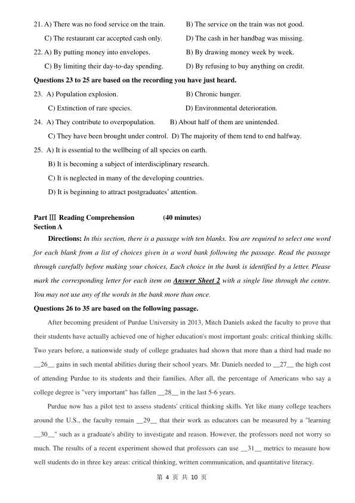
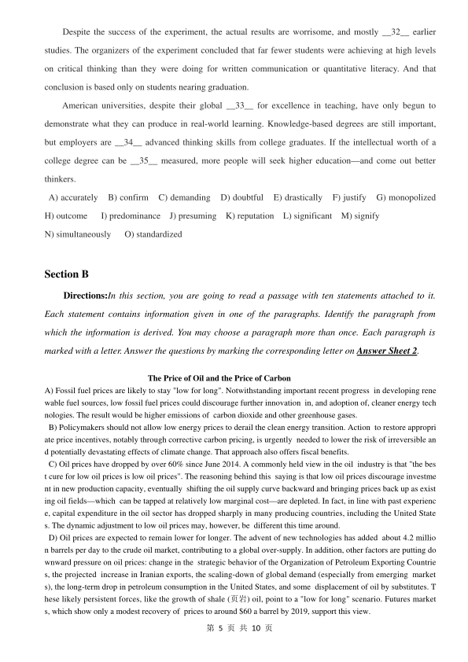

第 1 / 10 页

第1 页共10 页
2017 年6 月大学英语六级真题试卷一
Part I
Writing
(30 minutes)
(请于正式开考后半小时内完成该部分，之后将进行听力考试)
Directions: Suppose you are asked to give advice on whether to major in science or humanities at
college，write an essay to state your opinion. You are required to write at least 150 words but no more
than 200 words.
Part II
Listening Comprehension
(30 minutes)
Section A
Directions: In this section, you will hear two long conversations. At the end of each conversation, you
will hear four questions. Both the conversation and the questions will be spoken only once. After you
hear a question, you must choose the best answer from the four choices marked A), B), C) and D).
Then mark the corresponding letter on Answer Sheet 1 with a single line through the centre.
Questions 1 to 4 are based on the conversation you have just heard.
1.
A) Doing enjoyable work.
C) Earning a competitive salary.
B) Having friendly colleagues.
D) Working for supportive bosses.
2.
A) 31%.
B) 20%.
C) 25%.
D) 73%.
3.
A) Those of a small size.
B) Those run by women.
C) Those that are well managed.
D) Those full of skilled workers.
4.
A) They can hop from job to job easily.
B) They can win recognition of their work.
C) They can better balance work and life.
D) They can take on more than one job.
Questions 5 to 8 are based on the conversation you have just heard.
5.
A) It is a book of European history.
B) It is an introduction to music.
C) It is about the city of Bruges.
D) It is a collection of photos.
6.
A) When painting the concert hall of Bruges.
B) When vacationing in an Italian coastal city.
C) When taking pictures for a concert catalogue.
D) When writing about Belgium’s coastal regions.
7. A) The entire European coastline will be submerged.
B) The rich heritage of Europe will be lost completely.
查看 / 复制本页文字
第1 页共10 页 2017 年6 月大学英语六级真题试卷一 Part I Writing (30 minutes) (请于正式开考后半小时内完成该部分，之后将进行听力考试) Directions: Suppose you are asked to give advice on whether to major in science or humanities at college，write an essay to state your opinion. You are required to write at least 150 words but no more than 200 words. Part II Listening Comprehension (30 minutes) Section A Directions: In this section, you will hear two long conversations. At the end of each conversation, you will hear four questions. Both the conversation and the questions will be spoken only once. After you hear a question, you must choose the best answer from the four choices marked A), B), C) and D). Then mark the corresponding letter on Answer Sheet 1 with a single line through the centre. Questions 1 to 4 are based on the conversation you have just heard. 1. A) Doing enjoyable work. C) Earning a competitive salary. B) Having friendly colleagues. D) Working for supportive bosses. 2. A) 31%. B) 20%. C) 25%. D) 73%. 3. A) Those of a small size. B) Those run by women. C) Those that are well managed. D) Those full of skilled workers. 4. A) They can hop from job to job easily. B) They can win recognition of their work. C) They can better balance work and life. D) They can take on more than one job. Questions 5 to 8 are based on the conversation you have just heard. 5. A) It is a book of European history. B) It is an introduction to music. C) It is about the city of Bruges. D) It is a collection of photos. 6. A) When painting the concert hall of Bruges. B) When vacationing in an Italian coastal city. C) When taking pictures for a concert catalogue. D) When writing about Belgium’s coastal regions. 7. A) The entire European coastline will be submerged. B) The rich heritage of Europe will be lost completely.
第 2 / 10 页
第2 页共10 页
C) The seawater of Europe will be seriously polluted.
D)The major European scenic spots will disappear.
8. A) Its waterways are being increasingly polluted.
B) People cannot get around without using boats.
C) It attracts large numbers of tourists from home and abroad.
D) Tourists use wooden paths to reach their hotels in the morning.
Section B
Directions: In this section, you will hear two passages. At the end of each passage, you will hear
three or four questions. Both the passage and the questions will be spoken only once. After you hear a
question，you must choose the best answer from the four choices marked A), B), C) and D). Then
mark the corresponding letter on Answer Sheet 1 with a single line through the centre.
Questions9 to 12 are based on the passage you have just heard.
9.
A) They make careful preparations beforehand.
B) They take too many irrelevant factors into account.
C) They spend too much time anticipating their defeat.
D) They try hard to avoid getting off on the wrong foot.
10.
A) A person’s nervous system is more complicated than imagined.
B)Golfers usually have positive mental images of themselves.
C) Mental images often interfere with athletes’ performance.
D) Thinking has the same effect on the nervous system as doing.
11.
A) Anticipate possible problems.
B) Make a list of do’s and don’ts.
C) Picture themselves succeeding.
D) Try to appear more professional.
12.
A) She wore a designer dress.
B) She won her first jury trial.
C) She did not speak loud enough.
D) She presented moving pictures.
Questions 13 to 15 are based on the passage you have just heard.
13.
A) Its long-term effects are yet to be proved.
B)Its health benefits have been overestimated.
C) It helps people to avoid developing breast cancer.
D) It enables patients with diabetes to recover sooner.
14.
A) It focused on their ways of life during young adulthood.
查看 / 复制本页文字
第2 页共10 页 C) The seawater of Europe will be seriously polluted. D)The major European scenic spots will disappear. 8. A) Its waterways are being increasingly polluted. B) People cannot get around without using boats. C) It attracts large numbers of tourists from home and abroad. D) Tourists use wooden paths to reach their hotels in the morning. Section B Directions: In this section, you will hear two passages. At the end of each passage, you will hear three or four questions. Both the passage and the questions will be spoken only once. After you hear a question，you must choose the best answer from the four choices marked A), B), C) and D). Then mark the corresponding letter on Answer Sheet 1 with a single line through the centre. Questions9 to 12 are based on the passage you have just heard. 9. A) They make careful preparations beforehand. B) They take too many irrelevant factors into account. C) They spend too much time anticipating their defeat. D) They try hard to avoid getting off on the wrong foot. 10. A) A person’s nervous system is more complicated than imagined. B)Golfers usually have positive mental images of themselves. C) Mental images often interfere with athletes’ performance. D) Thinking has the same effect on the nervous system as doing. 11. A) Anticipate possible problems. B) Make a list of do’s and don’ts. C) Picture themselves succeeding. D) Try to appear more professional. 12. A) She wore a designer dress. B) She won her first jury trial. C) She did not speak loud enough. D) She presented moving pictures. Questions 13 to 15 are based on the passage you have just heard. 13. A) Its long-term effects are yet to be proved. B)Its health benefits have been overestimated. C) It helps people to avoid developing breast cancer. D) It enables patients with diabetes to recover sooner. 14. A) It focused on their ways of life during young adulthood.
第 3 / 10 页
第3 页共10 页
B) It tracked their change in food preferences for 20 years.
C) It focused on their difference from men in fiber intake.
D) It tracked their eating habits since their adolescence.
15.
A) Fiber may help to reduce hormones in the body.
B) Fiber may bring more benefits to women than men.
C) Fiber may improve the function of heart muscles.
D) Fiber may make blood circulation more smooth.
Section C
Directions: In this section, you will hear three recordings of lectures or talks followed by three or
four questions. The recordings will be played only once. After you hear a question, you must choose
the best answer from the four choices marked A), B)，C) and D). Then mark the corresponding letter on
Answer Sheet 1 with a single line through the centre.
Questions 16 to18 are based on the recording you have just heard.
16.
A) Observing the changes in marketing.
B) Conducting research on consumer behaviour.
C) Studying the hazards of young people drinking.
D) Investigating the impact of media on government.
17.
A) It is the cause of many street riots.
B) It is getting worse year by year.
C) It is a chief concern of parents.
D) It is an act of socialising.
18.
A) They spent a week studying their own purchasing behaviour.
B) They researched the impact of mobile phones on young people.
C) They analysed their family budgets over the years.
D) They conducted a thorough research on advertising.
Questions 19 to 22 are based on the recording you have just heard.
19.
A) It is helping its banks to improve efficiency.
B) It is trying hard to do away with dirty money.
C) It is the first country to use credit cards in the world.
D) It is likely to give up paper money in the near future.
20. A) Whether it is possible to travel without carrying any physical currency.
B)Whether it is possible to predict how much money one is going to spend.
C) Whether the absence of physical currency causes a person to spend more.
D) Whether the absence of physical currency is going to affect everyday life.
查看 / 复制本页文字
第3 页共10 页 B) It tracked their change in food preferences for 20 years. C) It focused on their difference from men in fiber intake. D) It tracked their eating habits since their adolescence. 15. A) Fiber may help to reduce hormones in the body. B) Fiber may bring more benefits to women than men. C) Fiber may improve the function of heart muscles. D) Fiber may make blood circulation more smooth. Section C Directions: In this section, you will hear three recordings of lectures or talks followed by three or four questions. The recordings will be played only once. After you hear a question, you must choose the best answer from the four choices marked A), B)，C) and D). Then mark the corresponding letter on Answer Sheet 1 with a single line through the centre. Questions 16 to18 are based on the recording you have just heard. 16. A) Observing the changes in marketing. B) Conducting research on consumer behaviour. C) Studying the hazards of young people drinking. D) Investigating the impact of media on government. 17. A) It is the cause of many street riots. B) It is getting worse year by year. C) It is a chief concern of parents. D) It is an act of socialising. 18. A) They spent a week studying their own purchasing behaviour. B) They researched the impact of mobile phones on young people. C) They analysed their family budgets over the years. D) They conducted a thorough research on advertising. Questions 19 to 22 are based on the recording you have just heard. 19. A) It is helping its banks to improve efficiency. B) It is trying hard to do away with dirty money. C) It is the first country to use credit cards in the world. D) It is likely to give up paper money in the near future. 20. A) Whether it is possible to travel without carrying any physical currency. B)Whether it is possible to predict how much money one is going to spend. C) Whether the absence of physical currency causes a person to spend more. D) Whether the absence of physical currency is going to affect everyday life.
第 4 / 10 页

第4 页共10 页
21. A) There was no food service on the train.
B) The service on the train was not good.
C) The restaurant car accepted cash only.
D) The cash in her handbag was missing.
22. A) By putting money into envelopes.
B) By drawing money week by week.
C) By limiting their day-to-day spending.
D) By refusing to buy anything on credit.
Questions 23 to 25 are based on the recording you have just heard.
23. A) Population explosion.
B) Chronic hunger.
C) Extinction of rare species.
D) Environmental deterioration.
24. A) They contribute to overpopulation.
B) About half of them are unintended.
C) They have been brought under control. D) The majority of them tend to end halfway.
25. A) It is essential to the wellbeing of all species on earth.
B) It is becoming a subject of interdisciplinary research.
C) It is neglected in many of the developing countries.
D) It is beginning to attract postgraduates’ attention.
Part ⅢReading Comprehension
(40 minutes)
Section A
Directions: In this section, there is a passage with ten blanks. You are required to select one word
for each blank from a list of choices given in a word bank following the passage. Read the passage
through carefully before making your choices, Each choice in the bank is identified by a letter. Please
mark the corresponding letter for each item on Answer Sheet 2 with a single line through the centre.
You may not use any of the words in the bank more than once.
Questions 26 to 35 are based on the following passage.
After becoming president of Purdue University in 2013, Mitch Daniels asked the faculty to prove that
their students have actually achieved one of higher education's most important goals: critical thinking skills.
Two years before, a nationwide study of college graduates had shown that more than a third had made no
__26__ gains in such mental abilities during their school years. Mr. Daniels needed to __27__ the high cost
of attending Purdue to its students and their families. After all, the percentage of Americans who say a
college degree is "very important" has fallen __28__ in the last 5-6 years.
Purdue now has a pilot test to assess students' critical thinking skills. Yet like many college teachers
around the U.S., the faculty remain __29__ that their work as educators can be measured by a "learning
__30__" such as a graduate's ability to investigate and reason. However, the professors need not worry so
much. The results of a recent experiment showed that professors can use __31__ metrics to measure how
well students do in three key areas: critical thinking, written communication, and quantitative literacy.
查看 / 复制本页文字
第4 页共10 页 21. A) There was no food service on the train. B) The service on the train was not good. C) The restaurant car accepted cash only. D) The cash in her handbag was missing. 22. A) By putting money into envelopes. B) By drawing money week by week. C) By limiting their day-to-day spending. D) By refusing to buy anything on credit. Questions 23 to 25 are based on the recording you have just heard. 23. A) Population explosion. B) Chronic hunger. C) Extinction of rare species. D) Environmental deterioration. 24. A) They contribute to overpopulation. B) About half of them are unintended. C) They have been brought under control. D) The majority of them tend to end halfway. 25. A) It is essential to the wellbeing of all species on earth. B) It is becoming a subject of interdisciplinary research. C) It is neglected in many of the developing countries. D) It is beginning to attract postgraduates’ attention. Part ⅢReading Comprehension (40 minutes) Section A Directions: In this section, there is a passage with ten blanks. You are required to select one word for each blank from a list of choices given in a word bank following the passage. Read the passage through carefully before making your choices, Each choice in the bank is identified by a letter. Please mark the corresponding letter for each item on Answer Sheet 2 with a single line through the centre. You may not use any of the words in the bank more than once. Questions 26 to 35 are based on the following passage. After becoming president of Purdue University in 2013, Mitch Daniels asked the faculty to prove that their students have actually achieved one of higher education's most important goals: critical thinking skills. Two years before, a nationwide study of college graduates had shown that more than a third had made no __26__ gains in such mental abilities during their school years. Mr. Daniels needed to __27__ the high cost of attending Purdue to its students and their families. After all, the percentage of Americans who say a college degree is "very important" has fallen __28__ in the last 5-6 years. Purdue now has a pilot test to assess students' critical thinking skills. Yet like many college teachers around the U.S., the faculty remain __29__ that their work as educators can be measured by a "learning __30__" such as a graduate's ability to investigate and reason. However, the professors need not worry so much. The results of a recent experiment showed that professors can use __31__ metrics to measure how well students do in three key areas: critical thinking, written communication, and quantitative literacy.
第 5 / 10 页

第5 页共10 页
Despite the success of the experiment, the actual results are worrisome, and mostly __32__ earlier
studies. The organizers of the experiment concluded that far fewer students were achieving at high levels
on critical thinking than they were doing for written communication or quantitative literacy. And that
conclusion is based only on students nearing graduation.
American universities, despite their global __33__ for excellence in teaching, have only begun to
demonstrate what they can produce in real-world learning. Knowledge-based degrees are still important,
but employers are __34__ advanced thinking skills from college graduates. If the intellectual worth of a
college degree can be __35__ measured, more people will seek higher education—and come out better
thinkers.
A) accurately
B) confirm
C) demanding
D) doubtful
E) drastically
F) justify
G) monopolized
H) outcome
I) predominance
J) presuming
K) reputation
L) significant
M) signify
N) simultaneously
O) standardized
Section B
Directions:In this section, you are going to read a passage with ten statements attached to it.
Each statement contains information given in one of the paragraphs. Identify the paragraph from
which the information is derived. You may choose a paragraph more than once. Each paragraph is
marked with a letter. Answer the questions by marking the corresponding letter on Answer Sheet 2.
The Price of Oil and the Price of Carbon
A) Fossil fuel prices are likely to stay "low for long". Notwithstanding important recent progress in developing rene
wable fuel sources, low fossil fuel prices could discourage further innovation in, and adoption of, cleaner energy tech
nologies. The result would be higher emissions of carbon dioxide and other greenhouse gases.
B) Policymakers should not allow low energy prices to derail the clean energy transition. Action to restore appropri
ate price incentives, notably through corrective carbon pricing, is urgently needed to lower the risk of irreversible an
d potentially devastating effects of climate change. That approach also offers fiscal benefits.
C) Oil prices have dropped by over 60% since June 2014. A commonly held view in the oil industry is that "the bes
t cure for low oil prices is low oil prices". The reasoning behind this saying is that low oil prices discourage investme
nt in new production capacity, eventually shifting the oil supply curve backward and bringing prices back up as exist
ing oil fields—which can be tapped at relatively low marginal cost—are depleted. In fact, in line with past experienc
e, capital expenditure in the oil sector has dropped sharply in many producing countries, including the United State
s. The dynamic adjustment to low oil prices may, however, be different this time around.
D) Oil prices are expected to remain lower for longer. The advent of new technologies has added about 4.2 millio
n barrels per day to the crude oil market, contributing to a global over-supply. In addition, other factors are putting do
wnward pressure on oil prices: change in the strategic behavior of the Organization of Petroleum Exporting Countrie
s, the projected increase in Iranian exports, the scaling-down of global demand (especially from emerging market
s), the long-term drop in petroleum consumption in the United States, and some displacement of oil by substitutes. T
hese likely persistent forces, like the growth of shale (页岩) oil, point to a "low for long" scenario. Futures market
s, which show only a modest recovery of prices to around $60 a barrel by 2019, support this view.
查看 / 复制本页文字
第5 页共10 页 Despite the success of the experiment, the actual results are worrisome, and mostly __32__ earlier studies. The organizers of the experiment concluded that far fewer students were achieving at high levels on critical thinking than they were doing for written communication or quantitative literacy. And that conclusion is based only on students nearing graduation. American universities, despite their global __33__ for excellence in teaching, have only begun to demonstrate what they can produce in real-world learning. Knowledge-based degrees are still important, but employers are __34__ advanced thinking skills from college graduates. If the intellectual worth of a college degree can be __35__ measured, more people will seek higher education—and come out better thinkers. A) accurately B) confirm C) demanding D) doubtful E) drastically F) justify G) monopolized H) outcome I) predominance J) presuming K) reputation L) significant M) signify N) simultaneously O) standardized Section B Directions:In this section, you are going to read a passage with ten statements attached to it. Each statement contains information given in one of the paragraphs. Identify the paragraph from which the information is derived. You may choose a paragraph more than once. Each paragraph is marked with a letter. Answer the questions by marking the corresponding letter on Answer Sheet 2. The Price of Oil and the Price of Carbon A) Fossil fuel prices are likely to stay "low for long". Notwithstanding important recent progress in developing rene wable fuel sources, low fossil fuel prices could discourage further innovation in, and adoption of, cleaner energy tech nologies. The result would be higher emissions of carbon dioxide and other greenhouse gases. B) Policymakers should not allow low energy prices to derail the clean energy transition. Action to restore appropri ate price incentives, notably through corrective carbon pricing, is urgently needed to lower the risk of irreversible an d potentially devastating effects of climate change. That approach also offers fiscal benefits. C) Oil prices have dropped by over 60% since June 2014. A commonly held view in the oil industry is that "the bes t cure for low oil prices is low oil prices". The reasoning behind this saying is that low oil prices discourage investme nt in new production capacity, eventually shifting the oil supply curve backward and bringing prices back up as exist ing oil fields—which can be tapped at relatively low marginal cost—are depleted. In fact, in line with past experienc e, capital expenditure in the oil sector has dropped sharply in many producing countries, including the United State s. The dynamic adjustment to low oil prices may, however, be different this time around. D) Oil prices are expected to remain lower for longer. The advent of new technologies has added about 4.2 millio n barrels per day to the crude oil market, contributing to a global over-supply. In addition, other factors are putting do wnward pressure on oil prices: change in the strategic behavior of the Organization of Petroleum Exporting Countrie s, the projected increase in Iranian exports, the scaling-down of global demand (especially from emerging market s), the long-term drop in petroleum consumption in the United States, and some displacement of oil by substitutes. T hese likely persistent forces, like the growth of shale (页岩) oil, point to a "low for long" scenario. Futures market s, which show only a modest recovery of prices to around $60 a barrel by 2019, support this view.
第 6 / 10 页
第6 页共10 页
E) Natural gas and coal—also fossil fuels—have similarly seen price declines that look to be long-lived. Coal and na
tural gas are mainly used for electricity generation, whereas oil is used mostly to power transportation, yet the price
s of all these energy sources are linked. The North American shale gas boom has resulted in record low prices ther
e. The recent discovery of the giant Zohr gas field off the Egyptian coast will eventually have impact on pricing in th
e Mediterranean region and Europe, and there is significant development potential in many other places, notably Ar
gentina. Coal prices also are low, owing to over-supply and the scaling-down of demand, especially from China, whi
ch bums half of the world's coal.
F) Technological innovations have unleashed the power of renewables such as wind, hydro, solar, and geotherma
l (地热). Even Africa and the Middle East, home to economies that areheavily dependent on fossil fuel exports, hav
e enormous potential to develop renewables. For example, the United Arab Emirates has endorsed an ambitious targe
t to draw 24% of its primary energy consumption from renewable sources by 2021.
G) Progress in the development of renewables could be fragile, however, if fossil fuel prices remain low for long. R
enewables account for only a small share of global primary energy consumption, which is still dominated by fossil fu
els—30% each for coal and oil, 25% for natural gas. But renewable energy will have to displace fossil fuels to a mu
ch greater extent in the future to avoid unacceptable climate risks.
H) Unfortunately, the current low prices for oil, gas, and coal may provide little incentive for research to find eve
n cheaper substitutes for those fuels. There is strong evidence that both innovation and adoption of cleaner technolog
y are strongly encouraged by higher fossil fuel prices. The same is true for new technologies for alleviating fossil fue
l emissions.
I) The current low fossil fuel price environment will thus certainly delay the energy transition from fossil fuel to cle
an energy sources. Unless renewables become cheap enough that substantial carbon deposits are left underground fo
r a very long time, if not forever, the planet will likely be exposed to potentially catastrophic climate risks.
J) Some climate impacts may already be discernible. For example, the United Nations Children's Fund estimates tha
t some 11 million children in Africa face hunger, disease, and water shortages as a result of the strongest ElNino (厄
尔尼诺) weather phenomenon in decades. Many scientists believe that El Nino events, caused by warming in the Paci
fic, are becoming more intense as a result of climate change.
K) Nations from around the world have gathered in Paris for the United Nations Climate Change Conference, CO
P 21, with the goal of a universal and potentially legally-binding agreement on reducing greenhouse gas emission
s. We need very broad participation to fully address the global tragedy that results when countries fail to take into ac
count the negative impact oftheir carbon emissions on the rest of the world. Moreover, non-participation by nations, i
f sufficiently widespread, can undermine the political will of participating countries to act.
L) The nations participating at COP 21 are focusing on quantitative emissions-reduction commitments. Economic r
easoning shows that the least expensive way for each country is to put a price on carbon emissions. The reason is tha
t when carbon is priced, those emissions reductions that are least costly to implement will happen first. The Internati
onal Monetary Fund calculates that countries can generate substantial fiscal revenues by eliminating fossil fuel subsi
dies and levying carbon charges that capture the domestic damage caused by emissions. A tax on upstream carbon so
urces is one easy way to put a price on carbon emissions, although some countries may wish to use other methods, su
ch as emissions trading schemes. In order to maximize global welfare, every country's carbon pricing should reflect
not only the purely domestic damage from emissions, but also the damage to foreign countries.
M) Setting the right carbon price will therefore efficiently align the costs paid by carbon users with the true social o
pportunity cost of using carbon. By raising relative demand for clean energy sources, a carbon price would also hel
p align the market return to clean-energy innovation with its social return, spurring the refinement of existing technol
ogies and the development of new ones. And it would raise the demand for technologies such as carbon capture an
d storage, spurring their further development. If not corrected by the appropriate carbon price, low fossil fuel prices a
re not accurately signaling to markets the true social profitability of clean energy. While alternative estimates of th
e damage from carbon emissions differ, and it's especially hard to reckon the likely costs of possible catastrophic cli
mate events, most estimates suggest substantial negative effects.
N) Direct subsidies to research and development have been adopted by some governments but are a poor substitut
e for a carbon price: they do only part of the job, leaving in place market incentives to over-use fossil fuels and there
查看 / 复制本页文字
第6 页共10 页 E) Natural gas and coal—also fossil fuels—have similarly seen price declines that look to be long-lived. Coal and na tural gas are mainly used for electricity generation, whereas oil is used mostly to power transportation, yet the price s of all these energy sources are linked. The North American shale gas boom has resulted in record low prices ther e. The recent discovery of the giant Zohr gas field off the Egyptian coast will eventually have impact on pricing in th e Mediterranean region and Europe, and there is significant development potential in many other places, notably Ar gentina. Coal prices also are low, owing to over-supply and the scaling-down of demand, especially from China, whi ch bums half of the world's coal. F) Technological innovations have unleashed the power of renewables such as wind, hydro, solar, and geotherma l (地热). Even Africa and the Middle East, home to economies that areheavily dependent on fossil fuel exports, hav e enormous potential to develop renewables. For example, the United Arab Emirates has endorsed an ambitious targe t to draw 24% of its primary energy consumption from renewable sources by 2021. G) Progress in the development of renewables could be fragile, however, if fossil fuel prices remain low for long. R enewables account for only a small share of global primary energy consumption, which is still dominated by fossil fu els—30% each for coal and oil, 25% for natural gas. But renewable energy will have to displace fossil fuels to a mu ch greater extent in the future to avoid unacceptable climate risks. H) Unfortunately, the current low prices for oil, gas, and coal may provide little incentive for research to find eve n cheaper substitutes for those fuels. There is strong evidence that both innovation and adoption of cleaner technolog y are strongly encouraged by higher fossil fuel prices. The same is true for new technologies for alleviating fossil fue l emissions. I) The current low fossil fuel price environment will thus certainly delay the energy transition from fossil fuel to cle an energy sources. Unless renewables become cheap enough that substantial carbon deposits are left underground fo r a very long time, if not forever, the planet will likely be exposed to potentially catastrophic climate risks. J) Some climate impacts may already be discernible. For example, the United Nations Children's Fund estimates tha t some 11 million children in Africa face hunger, disease, and water shortages as a result of the strongest ElNino (厄 尔尼诺) weather phenomenon in decades. Many scientists believe that El Nino events, caused by warming in the Paci fic, are becoming more intense as a result of climate change. K) Nations from around the world have gathered in Paris for the United Nations Climate Change Conference, CO P 21, with the goal of a universal and potentially legally-binding agreement on reducing greenhouse gas emission s. We need very broad participation to fully address the global tragedy that results when countries fail to take into ac count the negative impact oftheir carbon emissions on the rest of the world. Moreover, non-participation by nations, i f sufficiently widespread, can undermine the political will of participating countries to act. L) The nations participating at COP 21 are focusing on quantitative emissions-reduction commitments. Economic r easoning shows that the least expensive way for each country is to put a price on carbon emissions. The reason is tha t when carbon is priced, those emissions reductions that are least costly to implement will happen first. The Internati onal Monetary Fund calculates that countries can generate substantial fiscal revenues by eliminating fossil fuel subsi dies and levying carbon charges that capture the domestic damage caused by emissions. A tax on upstream carbon so urces is one easy way to put a price on carbon emissions, although some countries may wish to use other methods, su ch as emissions trading schemes. In order to maximize global welfare, every country's carbon pricing should reflect not only the purely domestic damage from emissions, but also the damage to foreign countries. M) Setting the right carbon price will therefore efficiently align the costs paid by carbon users with the true social o pportunity cost of using carbon. By raising relative demand for clean energy sources, a carbon price would also hel p align the market return to clean-energy innovation with its social return, spurring the refinement of existing technol ogies and the development of new ones. And it would raise the demand for technologies such as carbon capture an d storage, spurring their further development. If not corrected by the appropriate carbon price, low fossil fuel prices a re not accurately signaling to markets the true social profitability of clean energy. While alternative estimates of th e damage from carbon emissions differ, and it's especially hard to reckon the likely costs of possible catastrophic cli mate events, most estimates suggest substantial negative effects. N) Direct subsidies to research and development have been adopted by some governments but are a poor substitut e for a carbon price: they do only part of the job, leaving in place market incentives to over-use fossil fuels and there
第 7 / 10 页
第7 页共10 页
by add to the stock of atmospheric greenhouse gases without regard to the collateral (附带的) costs.
O) The hope is that the success of COP 21 opens the door to future international agreement on carbon prices. Agree
ment on an international carbon-price floor would be a good starting point in that process. Failure to address compre
hensively the problem of greenhouse gas emissions, however, exposes all generations, present and future, to incalcul
able risks.
36. A number of factors are driving down the global oil prices not just for now but in the foreseeable future.
37. Pricing carbon proves the most economical way to reduce greenhouse gas emissions.
38. It is estimated that extreme weather conditions have endangered the lives of millions of African children.
39. The prices of coal are low as a result of over-supply and decreasing demand.
40. Higher fossil fuel prices prove to be conducive to innovation and application of cleaner technology.
41. If fossil fuel prices remain low for a long time, it may lead to higher emissions of greenhouse gases.
42. Fossil fuels remain the major source of primary energy consumption in today's world.
43. Even major fossil exporting countries have great potential to develop renewable energies.
44. Greenhouse gas emissions, if not properly dealt with, will pose endless risks for mankind.
45. It is urgent for governments to increase the cost of using fossil fuels to an appropriate level to lessen the catastrop
hic effects of climate change.
Section C
Directions: There are 2 passages in this section. Each passage is followed by some questions or
unfinished statements. For each of them there are four choices marked A), B), C) and D). You should
decide on the best choice and mark the corresponding letter on Answer Sheet 2with a single line
through the centre.
Passage One
Questions 46 to 50 are based on the following passage.
Open data sharers are still in the minority in many fields. Although many researchers broadly agree that public a
ccess to raw data would accelerate science, most are reluctant to post theresults of their own labors online.
Some communities have agreed to share online—geneticists, for example, post DNA sequences at the GenBan
k repository (库) , and astronomers are accustomed to accessing images of galaxies and stars from, say, the Sloan Di
gital Sky Survey, a telescope that has observed some 500 million objects—but these remain the exception, not the rul
e. Historically, scientists have objected to sharing for many reasons: it is a lot of work; until recently, good database
s did no t exist; grant funders were not pushing for sharing; it has been difficult to agree on standards for formattin
g data; and there is no agreed way to assign credit for data.
But the barriers are disappearing, in part because journals and funding agencies worldwide are encouraging scie
ntists to make their data public. Last year, the Royal Society in London said in its report that scientists need to "shif
t away from a research culture where data is viewed as a private preserve". Funding agencies note that data paid fo
r with public money should be public information, and the scientific community is recognizing that data can now b
e shared digitally in ways that were not possible before. To match the growing demand, services are springing up to
make it easier to publish research products online and enable other researchers to discover and cite them.
Although calls to share data often concentrate on the moral advantages of sharing, the practice is not purely altr
uistic (利他的). Researchers who share get plenty of personal benefits, including more connections with colleagues, i
mproved visibility and increased citations. The most successful sharers—those whose data are downloaded and cite
d the most often---get noticed, and their work gets used. For example, one of the most popular data sets on multidisc
查看 / 复制本页文字
第7 页共10 页 by add to the stock of atmospheric greenhouse gases without regard to the collateral (附带的) costs. O) The hope is that the success of COP 21 opens the door to future international agreement on carbon prices. Agree ment on an international carbon-price floor would be a good starting point in that process. Failure to address compre hensively the problem of greenhouse gas emissions, however, exposes all generations, present and future, to incalcul able risks. 36. A number of factors are driving down the global oil prices not just for now but in the foreseeable future. 37. Pricing carbon proves the most economical way to reduce greenhouse gas emissions. 38. It is estimated that extreme weather conditions have endangered the lives of millions of African children. 39. The prices of coal are low as a result of over-supply and decreasing demand. 40. Higher fossil fuel prices prove to be conducive to innovation and application of cleaner technology. 41. If fossil fuel prices remain low for a long time, it may lead to higher emissions of greenhouse gases. 42. Fossil fuels remain the major source of primary energy consumption in today's world. 43. Even major fossil exporting countries have great potential to develop renewable energies. 44. Greenhouse gas emissions, if not properly dealt with, will pose endless risks for mankind. 45. It is urgent for governments to increase the cost of using fossil fuels to an appropriate level to lessen the catastrop hic effects of climate change. Section C Directions: There are 2 passages in this section. Each passage is followed by some questions or unfinished statements. For each of them there are four choices marked A), B), C) and D). You should decide on the best choice and mark the corresponding letter on Answer Sheet 2with a single line through the centre. Passage One Questions 46 to 50 are based on the following passage. Open data sharers are still in the minority in many fields. Although many researchers broadly agree that public a ccess to raw data would accelerate science, most are reluctant to post theresults of their own labors online. Some communities have agreed to share online—geneticists, for example, post DNA sequences at the GenBan k repository (库) , and astronomers are accustomed to accessing images of galaxies and stars from, say, the Sloan Di gital Sky Survey, a telescope that has observed some 500 million objects—but these remain the exception, not the rul e. Historically, scientists have objected to sharing for many reasons: it is a lot of work; until recently, good database s did no t exist; grant funders were not pushing for sharing; it has been difficult to agree on standards for formattin g data; and there is no agreed way to assign credit for data. But the barriers are disappearing, in part because journals and funding agencies worldwide are encouraging scie ntists to make their data public. Last year, the Royal Society in London said in its report that scientists need to "shif t away from a research culture where data is viewed as a private preserve". Funding agencies note that data paid fo r with public money should be public information, and the scientific community is recognizing that data can now b e shared digitally in ways that were not possible before. To match the growing demand, services are springing up to make it easier to publish research products online and enable other researchers to discover and cite them. Although calls to share data often concentrate on the moral advantages of sharing, the practice is not purely altr uistic (利他的). Researchers who share get plenty of personal benefits, including more connections with colleagues, i mproved visibility and increased citations. The most successful sharers—those whose data are downloaded and cite d the most often---get noticed, and their work gets used. For example, one of the most popular data sets on multidisc
第 8 / 10 页
第8 页共10 页
iplinary repository Dryad is about wood density around the world; it has been downloaded 5,700 times. Co-author A
my Zanne thinks that users probably range from climate-change researchers wanting to estimate how much carbon i
s stored in biomass, to foresters looking for information on different grades of timber. "I'd much prefer to have my d
ata used by the maximum number of people to ask their own questions," she says. "It's important to allow readers a
nd reviewers to see exactly how you arrive at your results. Publishing data and code
allows your science to be repro
ducible."
Even people whose data are less popular can benefit. By making the effort to organize and label files so others c
an understand them, scientists become more organized and better disciplined themselves, thus avoiding confusion lat
er on.
46. What do many researchers generally accept?
A) It is imperative to protect scientists' patents.
B) Repositories are essential to scientific research.
C) Open data sharing is most important to medical science.
D) Open data sharing is conducive to scientific advancement.
47. What is the attitude of most researchers towards making their own data public?
A) Opposed.
B) Ambiguous.
C) Liberal.
D) Neutral.
48. According to the passage, what might hinder open data sharing?
A) The fear of massive copying.
B) The lack of a research culture.
C) The belief that research data is private intellectual property.
D) The concern that certain agencies may make a profit out of it.
49. What helps lift some of the barriers to open data sharing?
A) The ever-growing demand for big data.
B) The advancement of digital technology.
C) The changing attitude of journals and funders.
D) The trend of social and economic development.
50. Dryad serves as an example to show how open data sharing ________.
A) is becoming increasingly popular
B) benefits sharers and users alike
C) makes researchers successful
D) saves both money and labor
Passage Two
Questions 51 to 55 are based on the following passage.
Macy's reported its sales plunged 5.2% in November and December at stores open more than a year, a disappoin
ting holiday season performance that capped a difficult year for a department store chain facing wide-ranging challen
ges. Its flagship stores in major U.S. cities depend heavily on international tourist spending, which shrank at many re
tailers due to a strong dollar. Meanwhile, Macy's has simply struggled to lure consumers who are more interested in
spending on travel or dining out than on new clothes or accessories.
The company blamed much of the poor performance in November and December on unseasonably warm weath
er. "About 80% of our company's year-over-year declines incomparable sales can be attributed to shortfalls (短缺) i
n cold-weather goods," said chief executive Terry Lundgren in a press release. This prompted the company to cut it
s forecasts for the full fourth quarter.
However, it's clear that Macy's believes its troubles run deeper than a temporary aberration (偏离) off the thermo
meter. The retail giant said the poor financial performance this year has pushed it to begin implementing $400 millio
n in cost-cutting measures. The company pledged to cut 600 back-office positions, though some 150 workers in thos
查看 / 复制本页文字
第8 页共10 页 iplinary repository Dryad is about wood density around the world; it has been downloaded 5,700 times. Co-author A my Zanne thinks that users probably range from climate-change researchers wanting to estimate how much carbon i s stored in biomass, to foresters looking for information on different grades of timber. "I'd much prefer to have my d ata used by the maximum number of people to ask their own questions," she says. "It's important to allow readers a nd reviewers to see exactly how you arrive at your results. Publishing data and code allows your science to be repro ducible." Even people whose data are less popular can benefit. By making the effort to organize and label files so others c an understand them, scientists become more organized and better disciplined themselves, thus avoiding confusion lat er on. 46. What do many researchers generally accept? A) It is imperative to protect scientists' patents. B) Repositories are essential to scientific research. C) Open data sharing is most important to medical science. D) Open data sharing is conducive to scientific advancement. 47. What is the attitude of most researchers towards making their own data public? A) Opposed. B) Ambiguous. C) Liberal. D) Neutral. 48. According to the passage, what might hinder open data sharing? A) The fear of massive copying. B) The lack of a research culture. C) The belief that research data is private intellectual property. D) The concern that certain agencies may make a profit out of it. 49. What helps lift some of the barriers to open data sharing? A) The ever-growing demand for big data. B) The advancement of digital technology. C) The changing attitude of journals and funders. D) The trend of social and economic development. 50. Dryad serves as an example to show how open data sharing ________. A) is becoming increasingly popular B) benefits sharers and users alike C) makes researchers successful D) saves both money and labor Passage Two Questions 51 to 55 are based on the following passage. Macy's reported its sales plunged 5.2% in November and December at stores open more than a year, a disappoin ting holiday season performance that capped a difficult year for a department store chain facing wide-ranging challen ges. Its flagship stores in major U.S. cities depend heavily on international tourist spending, which shrank at many re tailers due to a strong dollar. Meanwhile, Macy's has simply struggled to lure consumers who are more interested in spending on travel or dining out than on new clothes or accessories. The company blamed much of the poor performance in November and December on unseasonably warm weath er. "About 80% of our company's year-over-year declines incomparable sales can be attributed to shortfalls (短缺) i n cold-weather goods," said chief executive Terry Lundgren in a press release. This prompted the company to cut it s forecasts for the full fourth quarter. However, it's clear that Macy's believes its troubles run deeper than a temporary aberration (偏离) off the thermo meter. The retail giant said the poor financial performance this year has pushed it to begin implementing $400 millio n in cost-cutting measures. The company pledged to cut 600 back-office positions, though some 150 workers in thos
第 9 / 10 页
第9 页共10 页
e roles would be reassigned to other jobs. It also plans to offer "voluntary separation" packages to 165 senior executi
ves. It will slash staffing at its fleet of 770 stores, a move affecting some 3,000 employees.
The retailer also announced the locations of 36 stores it will close in early 2016. The company had previously a
nnounced the planned closures, but had not said which locations would be affected. None of the chain's stores in th
e Washington metropolitan area are to be closed.
Macy's has been moving aggressively to try to remake itself for a new era of shopping. It has plans to open mor
e locations of Macy's Backstage, a newly-developed off-price concept which might help it better compete with ambit
ious T. J. Maxx. It's also pushing ahead in 2016 with an expansion of Bluemercury, the beauty chain it bought last ye
ar. At a time when young beauty shoppers are often turning to Sephora or Ulta instead of department store beauty co
unters, Macy's hopes Bluemercury will help strengthen its position in the category.
One relative bright spot for Macy's during the holiday season was the online channel, where it rang up "double-
digit" increases in sales and a 25% increase in the number of orders it filled. That relative strength would be consisten
t with what was seen in the wilder retail industry during the early part of the holiday season. While Thanksgiving, Bl
ack Friday and Cyber Monday all saw record spending online, in-store sales plunged over the holiday weekend.
51. What does the author say about the shrinking spending of international tourists in theU.S.?
A) It is attributable to the rising value of the U.S. dollar.
B) It is a direct result of the global economic recession.
C) It reflects a shift of their interest in consumer goods.
D) It poses a potential threat to the retail business in the U.S.
52. What does Macy's believe about its problems?
A) They can be solved with better management.
B) They cannot be attributed to weather only.
C) They are not as serious in its online stores.
D) They call for increased investments.
53. In order to cut costs, Macy's decided to ________.
A) cut the salary of senior executives
B) relocate some of its chain stores
C) adjust its promotion strategies
D) reduce the size of its staff
54. Why does Macy's plan to expand Bluemercury in 2016?
A) To experiment on its new business concept.
B) To focus more on beauty products than clothing.
C) To promote sales of its products by lowering prices.
D) To be more competitive in sales of beauty products.
55. What can we learn about Macy's during the holiday season?
A) Sales dropped sharply in its physical stores.
B) Its retail sales exceeded those of T. J. Maxx.
C) It helped Bluemercury establish its position worldwide.
D) It filled its stores with abundant supply of merchandise.
Part IV
Translation
(30 minutes)
Directions: For this part, you are allowed 30 minutes to translate a passage from Chinese into
English. You should write your answer on Answer Sheet 2.
查看 / 复制本页文字
第9 页共10 页 e roles would be reassigned to other jobs. It also plans to offer "voluntary separation" packages to 165 senior executi ves. It will slash staffing at its fleet of 770 stores, a move affecting some 3,000 employees. The retailer also announced the locations of 36 stores it will close in early 2016. The company had previously a nnounced the planned closures, but had not said which locations would be affected. None of the chain's stores in th e Washington metropolitan area are to be closed. Macy's has been moving aggressively to try to remake itself for a new era of shopping. It has plans to open mor e locations of Macy's Backstage, a newly-developed off-price concept which might help it better compete with ambit ious T. J. Maxx. It's also pushing ahead in 2016 with an expansion of Bluemercury, the beauty chain it bought last ye ar. At a time when young beauty shoppers are often turning to Sephora or Ulta instead of department store beauty co unters, Macy's hopes Bluemercury will help strengthen its position in the category. One relative bright spot for Macy's during the holiday season was the online channel, where it rang up "double- digit" increases in sales and a 25% increase in the number of orders it filled. That relative strength would be consisten t with what was seen in the wilder retail industry during the early part of the holiday season. While Thanksgiving, Bl ack Friday and Cyber Monday all saw record spending online, in-store sales plunged over the holiday weekend. 51. What does the author say about the shrinking spending of international tourists in theU.S.? A) It is attributable to the rising value of the U.S. dollar. B) It is a direct result of the global economic recession. C) It reflects a shift of their interest in consumer goods. D) It poses a potential threat to the retail business in the U.S. 52. What does Macy's believe about its problems? A) They can be solved with better management. B) They cannot be attributed to weather only. C) They are not as serious in its online stores. D) They call for increased investments. 53. In order to cut costs, Macy's decided to ________. A) cut the salary of senior executives B) relocate some of its chain stores C) adjust its promotion strategies D) reduce the size of its staff 54. Why does Macy's plan to expand Bluemercury in 2016? A) To experiment on its new business concept. B) To focus more on beauty products than clothing. C) To promote sales of its products by lowering prices. D) To be more competitive in sales of beauty products. 55. What can we learn about Macy's during the holiday season? A) Sales dropped sharply in its physical stores. B) Its retail sales exceeded those of T. J. Maxx. C) It helped Bluemercury establish its position worldwide. D) It filled its stores with abundant supply of merchandise. Part IV Translation (30 minutes) Directions: For this part, you are allowed 30 minutes to translate a passage from Chinese into English. You should write your answer on Answer Sheet 2.
第 10 / 10 页
第10 页共10 页
明朝统治中国276 年，被人们描绘成人类历史上治理有序、社会稳定的最伟大的时代之一。这一时期，
手工业的发展促进了市场经济和城市化。大量商品，包括酒和丝绸，都在市场销售。同时，还进口许多外国
商品，如时钟和烟草。北京、南京、扬州、苏州这样的大商业中心相继形成。也是在明代，由郑和率领的船
队曾到印度洋进行了七次大规模探险航行。还值得一提的是，中国文学的四大经典名著中有三部写于明代。
查看 / 复制本页文字
第10 页共10 页 明朝统治中国276 年，被人们描绘成人类历史上治理有序、社会稳定的最伟大的时代之一。这一时期， 手工业的发展促进了市场经济和城市化。大量商品，包括酒和丝绸，都在市场销售。同时，还进口许多外国 商品，如时钟和烟草。北京、南京、扬州、苏州这样的大商业中心相继形成。也是在明代，由郑和率领的船 队曾到印度洋进行了七次大规模探险航行。还值得一提的是，中国文学的四大经典名著中有三部写于明代。